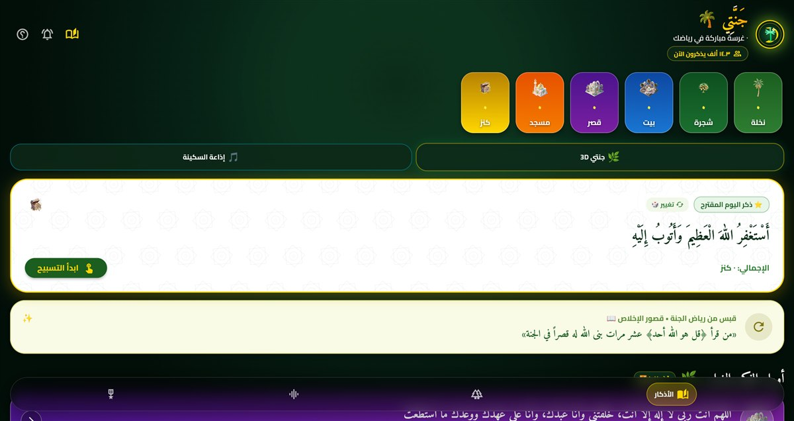
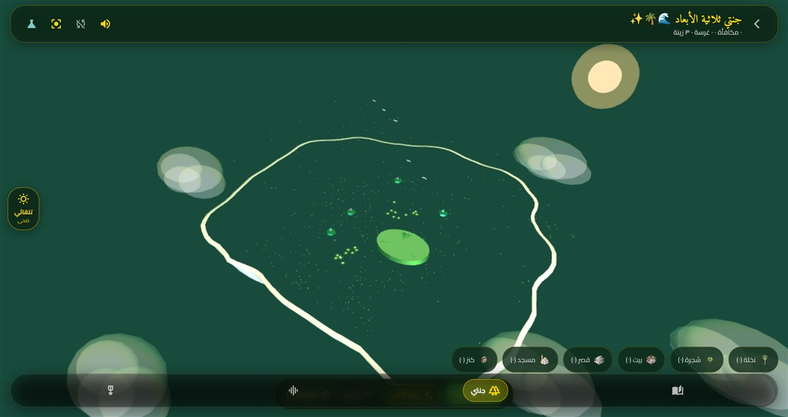
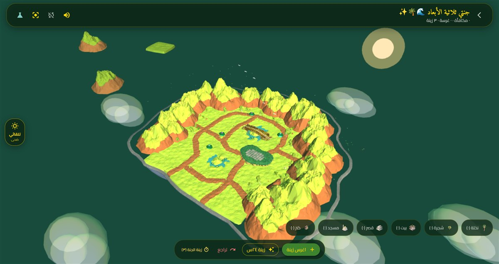
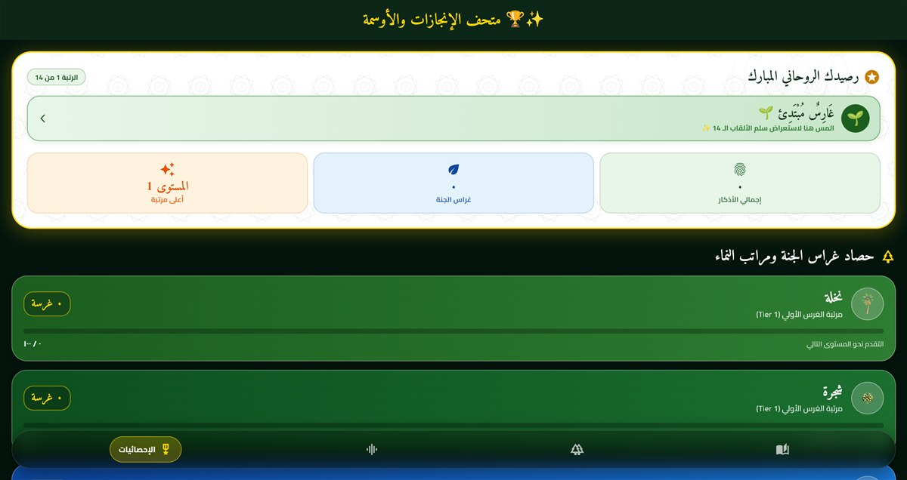
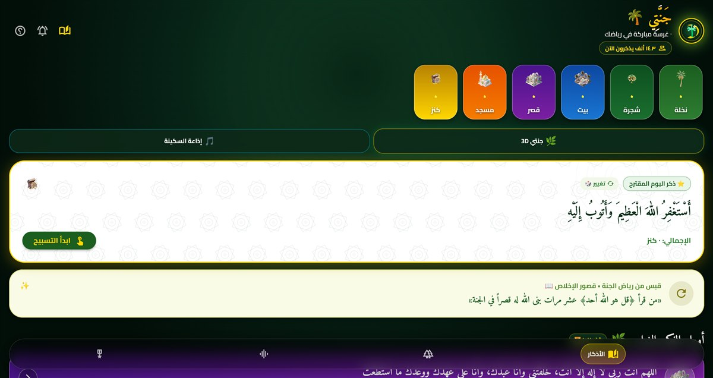

«تبويب الواحة 2.5D هيكون جنتي، وبعد ثواني من دخول جنتي يدخل ما يشبه الفل سكرين
وتختفي التبويبات.» — نُفِّذ حرفيًا: التبويب الثاني اسمه الآن «جنتي»
ويعرض Jannati3DScreen نفسه، لا نسخة منه ولا صفحة جديدة.
الشاشتان المحذوفتان كانتا تقرآن من التخزين فقط ولا تكتبان فيه.
الكتابة في rewards_list تأتي من العدّاد وشاشة 3D وحدهما، و
stats_screen.dart يقرأ getAllRewards() مباشرة ولا يستورد
أيًّا منهما، فلم تكن هناك «إحصاءة داخل الواحة» كي تُنقل.
| الملف | الحجم | من كان يستورده | يكتب في التخزين؟ | الحكم |
|---|---|---|---|---|
jannati_isometric_screen.dart | 40.6 KB | home_screen وgarden_screen | لا — قراءة فقط | حُذف |
garden_screen.dart | 26.3 KB | home_screen فقط، ولا يُنشأ أبدًا | لا | حُذف |
garden_world_manager.dart | 4.3 KB | garden_screen فقط | لا | حُذف |
٢٠ صورة في assets/images/ | 0.74 MB | الشاشتان فقط | — | حُذفت |
GESSTwo في pubspec.yaml | — | ٦ مواضع كلها في garden_screen | — | حُذف |
garden_screen.dart
يستورد jannati_isometric_screen.dart ويفتحه. حذف الأيزومترك وحده
يكسر الترجمة، فحُذف الاثنان في تغيير واحد.
الأذكار 0 · جنتي 1 · السكينة 2 · الإحصاءات 3
Jannati3DScreen(embedded: true, onExit: _exitGarden) داخل IndexedStack._gardenOpened)، ثم تبقى حيّة — لا إعادة تهيئة WebGL ولا تحميل ١٧ GLB في كل تبديل.embedded يمنع Scaffold ثانيًا وNavigator.pop؛ سهم الشاشة يستدعي onExit.SystemUiMode.immersiveSticky + مؤقّت _kNavAutoHideDelay = 3s.AnimatedSlide + AnimatedOpacity + IgnorePointer — لا اختفاء مفاجئ.PopScope يعيد للتبويب 0)، وكلاهما يعيد edgeToEdge ويُظهر الشريط ويقرأ rewards_list من جديد.




IndexedStack.Navigator.push لـ3D: مرفوض — التبويبات تختفي فورًا لا بعد ٣ ثوانٍ، ولا يبقى للتبويب معنى.IndexedStack وHtmlElementView
مشهد 3D على الويب عنصر DOM حقيقي، والسؤال المشروع: هل يبقى كانفاس WebGL فوق
تبويب آخر إذا ظل الودجت حيًّا؟ محرّك Flutter 3.44 يزيل
flt-platform-view-slot من الـDOM لأي عرض غير موجود في تركيب
الإطار الحالي:
unusedViews.forEach(disposeView); // platform_views/embedder.dart
وdisposeView ينزع clipChain.root من الـDOM. لذلك
اللقطة رقم ٤ (الإحصاءات والمشهد حيّ في الخلفية) تخرج نظيفة. لا تُحوّل «جنتي»
إلى Offstage/Visibility بلا إعادة هذا الفحص.
flutter analyze — لا مشاكل.flutter test — ٨٧/٨٧.flutter build web — نجح، ثم فُحص التطبيق المبني في Chrome حقيقي (لقطات أعلاه).PROJECT.md §3.6.